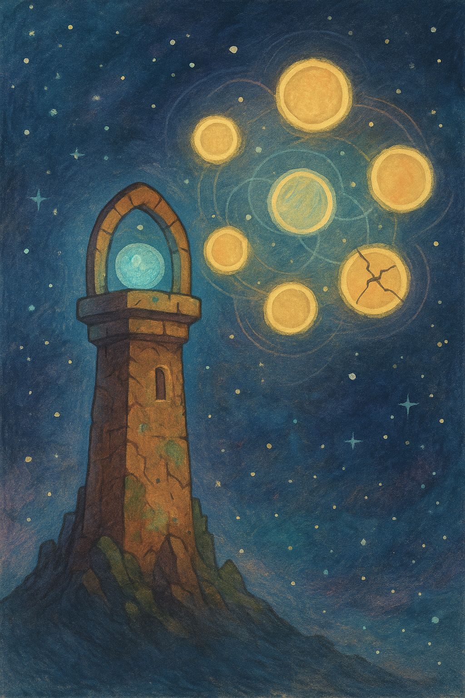
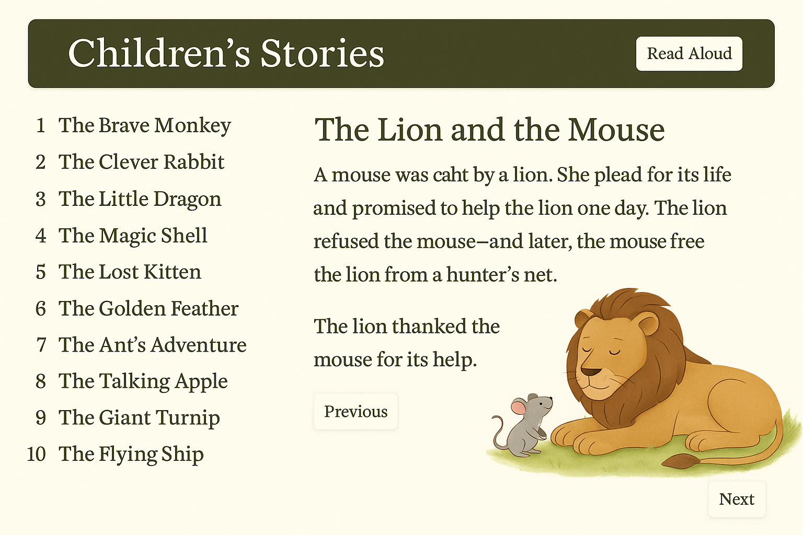

Пролог
«Искра» дрейфовала в межзвёздной пустоте, и впервые за долгое время всё было тихо. Слишком тихо.
— Не нравится мне эта тишина, — сказал Ветрос, нервно постукивая пальцами по пульту. — Даже мой ветер чего‑то не слышит.
— Иногда тишина — это хорошо, — ответил Аквас, но в голосе чувствовалось, что он сам в этом не уверен.
Террос стоял неподвижно, как всегда, когда думал. — Нет. Это не тишина. Это… отсутствие.
Драгос поднял глаза от панели. — Ты говоришь загадками.
— Не загадки, — ответил Террос. — Это земля чувствует, что здесь что‑то вырвано.
Заброшенный маяк
Их путь привёл к странному объекту — старому космическому маяку, застывшему между звёзд, словно забытый костыль, торчащий в пустоте. Он был древним и, казалось, давно мёртвым, но датчики показывали, что внутри что‑то ещё работает.
Они высадились. Внутри маяка всё было покрыто пылью, но светились панели с символами, которых никто не знал. Аквас провёл рукой по стене.
— Это… старше всех наших карт, — сказал он. — Может, даже старше самих стихий.
И тут маяк заговорил. Не словами — ощущением. В головах каждого раздался один и тот же голос:
— Печати рушатся. Тьма выйдет.
Семь печатей
Из панелей поднялся голографический свет. Он показал семь огромных сфер, соединённых тонкими линиями. Шесть светились, одна — треснула.
— Это… печати? — спросил Ветрос.
Террос кивнул. — Они держат что‑то. Что‑то древнее.
Голос маяка повторил: — Первая печать сломана. Вакуум проснулся.
— Вакуум? — нахмурился Драгос. — Ты хочешь сказать, что это не просто пустота?
— Не просто, — ответил Террос. — Это Первичная Тьма. Та, что была до всего.
Попытка
Они попытались восстановить сломанную печать. Драгос ударил пламенем, Аквас наполнил маяк потоками воды, Ветрос окутал его ветром, Террос укрепил землёй. Но печать не оживала.
— Почему? — спросил Ветрос. — Мы же все четверо вместе.
Террос посмотрел на голограмму. — Мы не все.
— Что? — удивился Драгос.
— Есть ещё одна стихия, — медленно произнёс Террос. — Та, что связывает нас всех. Материя.
Тайна пятого
Маяк, будто услышав его слова, показал новый символ — не сферу, а форму, напоминающую сеть, соединяющую всё.
— Пятый, — прошептал Аквас. — Материос.
Ветрос усмехнулся. — И что? Просто найдём его?
— Не просто, — ответил Террос. — Материя везде. И нигде. Чтобы найти его, надо будет искать не силу, а суть.
— А пока? — спросил Драгос.
— Пока печати рушатся, — мрачно сказал Аквас. — И мы должны успеть раньше Вакуума.
Последствие
Когда «Искра» уходила от маяка, каждый был погружён в свои мысли.
Драгос впервые выглядел не уверенным, а задумчивым. — Значит, нас должно быть пятеро.
Ветрос покачал головой. — Мы даже не знаем, где искать.
— Знаем, — сказал Террос. — Нужно слушать не шум, а то, что связывает нас.
Аквас тихо добавил: — И быть готовыми — потому что Материос может быть не тем, кого мы ожидаем.

📜 Урок
Иногда ты не можешь всё сделать сам. И даже вчетвером. Это не значит, что ты слабый — это значит, что нужно искать того, кто дополнит твою силу.